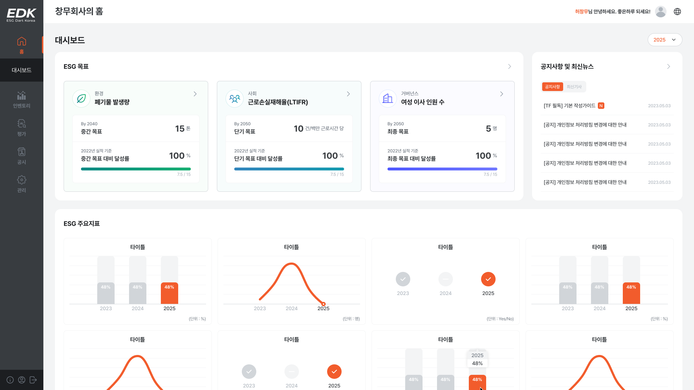
ESG 데이터를 단순 관리에 그치지 않고, 공시, 목표 설정, 성과 관리, AI 분석까지 하나의 흐름으로 연결해 기업이 실제로 활용할 수 있는 운영 체계로 설계했습니다.
기업의 ESG 지표를 단순 데이터가 아닌 실행 가능한 목표로 전환하고, 단기·중간·최종 단계로 구분해 목표 설정부터 달성까지의 흐름을 구조화
ESG 데이터 입력, 공시, AI 분석 결과를 분리하지 않고 하나의 흐름으로 연결해 사용자가 별도의 해석 없이도 데이터를 이해하고 활용할 수 있도록 설계
분산된 ESG 데이터를 통합·구조화해 핵심 지표를 직관적으로 파악할 수 있는 정보 체계를 설계했습니다.
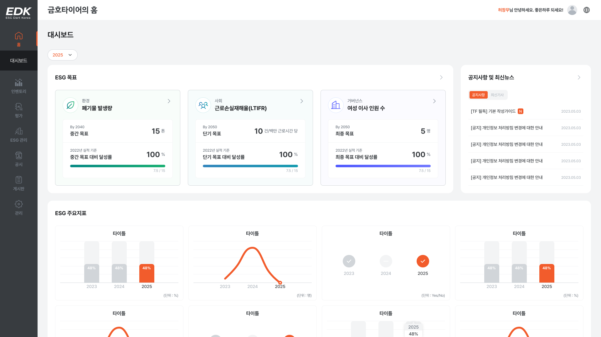
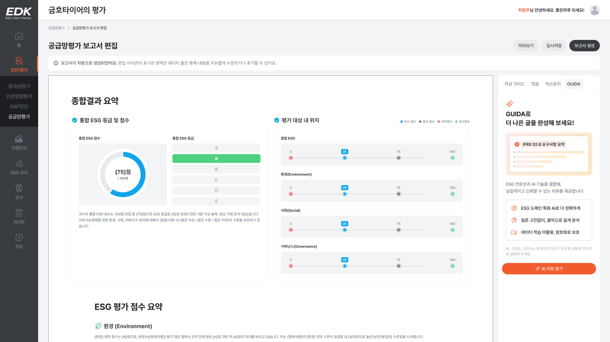
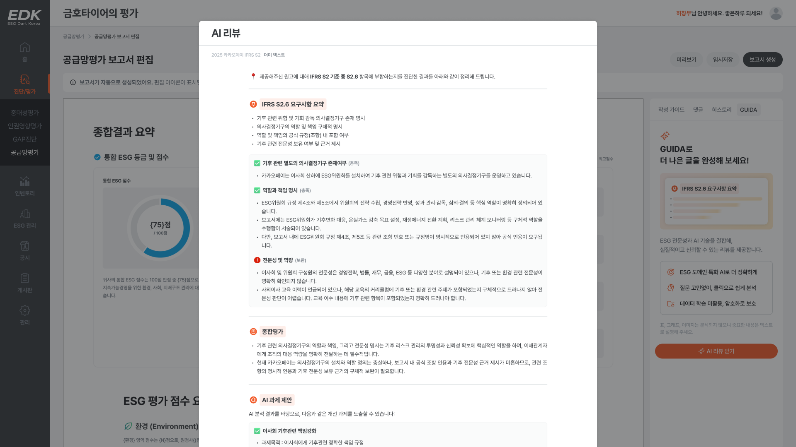
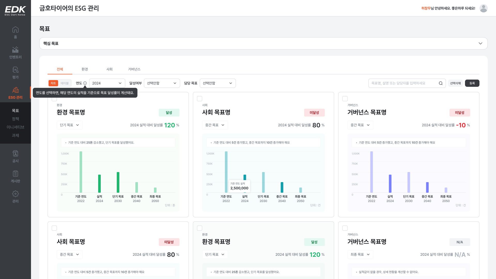
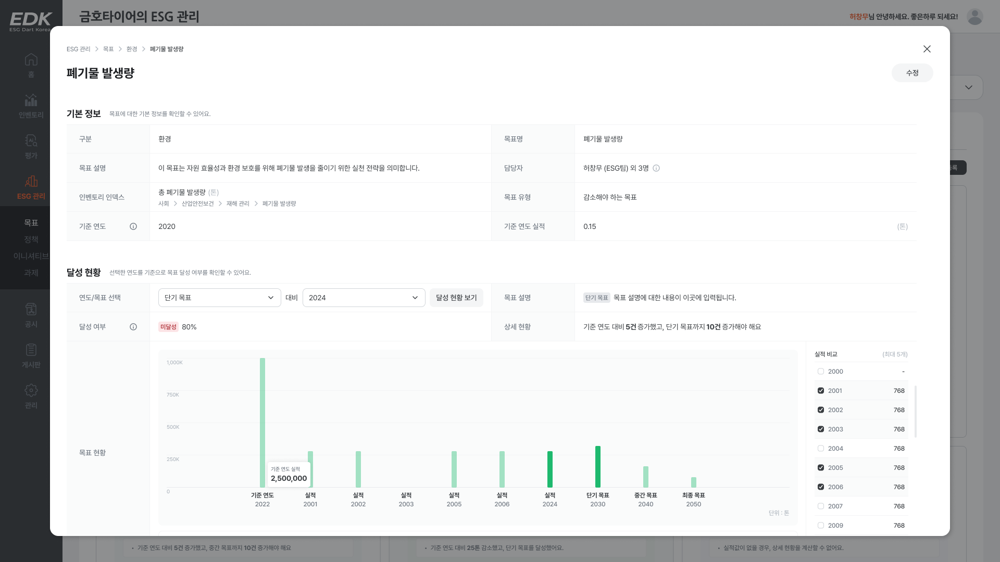
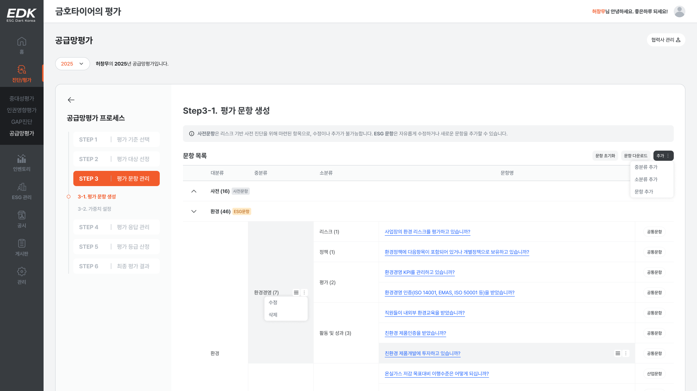
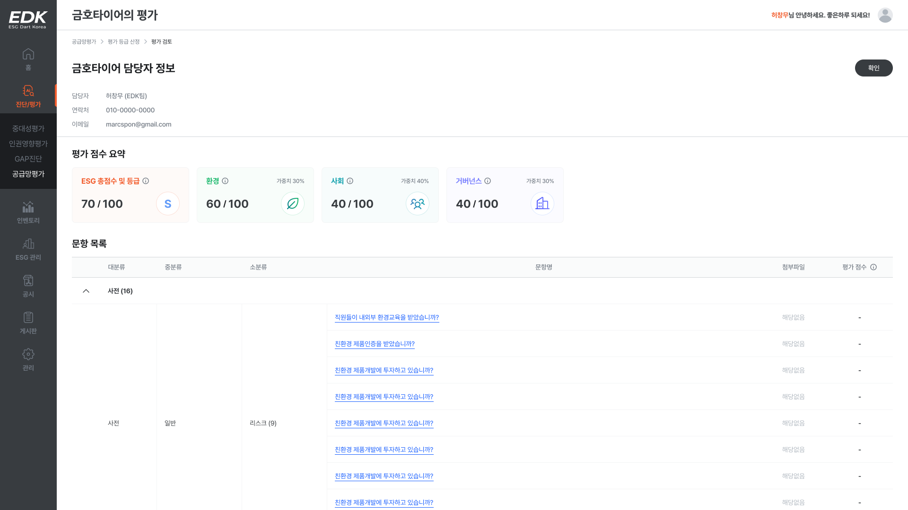
기획과 디자인 전반에 적용되는 명명, 문장, 인터랙션 기준을 정의해, 의사결정 기준을 통일하고 일관된 사용자 경험을 설계했습니다.
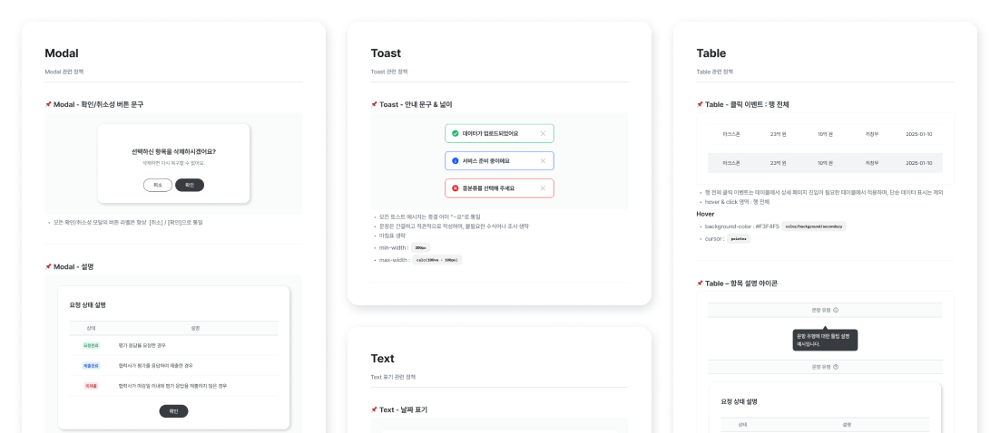
기능 간 관계와 사용자 이동 경로를 구조화해, 복잡한 서비스를 흐름 중심으로 이해하고 설계할 수 있는 기반 구축
사용자 행동에 따른 상태 변화와 인터페이스 반응을 체계화해, 화면 단위가 아닌 서비스 전반에서 일관된 동작 방식 확립
분산된 UI 요소를 통합하고, 컴포넌트 기반 설계를 통해 일관성과 확장성을 확보했습니다.
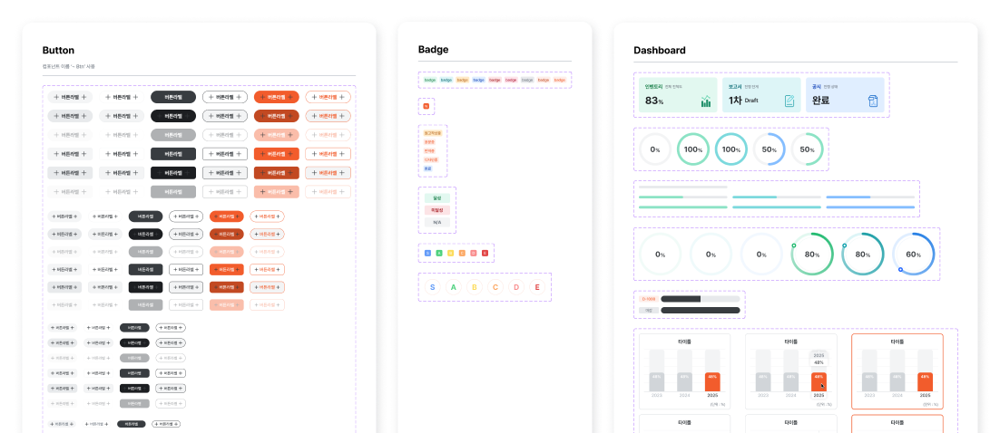
컬러, 타이포그래피 등 기준을 표준화하여 화면 간 시각적 불균형을 제거하고 사용자 경험의 일관성 유지
재사용 가능한 컴포넌트 구조를 정의하여 디자인 및 개발 생산성을 향상시키고 유지보수 비용 절감
ESG 인벤토리 데이터를 바탕으로 단기·중간·최종 목표를 설정하고, 달성 현황을 추적하여 기업의 ESG 실행 체계를 구축하는 메뉴입니다.
한 기업의 모든 ESG 지표를 ‘관리 가능한 목표’로 전환하여 실질적인 실행 관리 체계 구축
인벤토리에 등록된 정량 지표(숫자형 인덱스)를 기반으로, 단기·중간·최종 목표 설정
목표를 실적과 비교하여 추이와 달성 현황 확인
단기/중간/최종 목표로 구분되는 구조를 설계하고, 목표 수립부터 달성까지의 상태를 직관적으로 파악할 수 있도록 단계별 UI 구성
다양한 필터 조건(달성 여부, 담당자 등)을 도입하여 사용성과 검색 편의성 개선, 리스트 뷰의 단순화 디자인
UI 에러 대응 방식을 설계하고, 다양한 사용자 시나리오에 대응한 디자인 설계
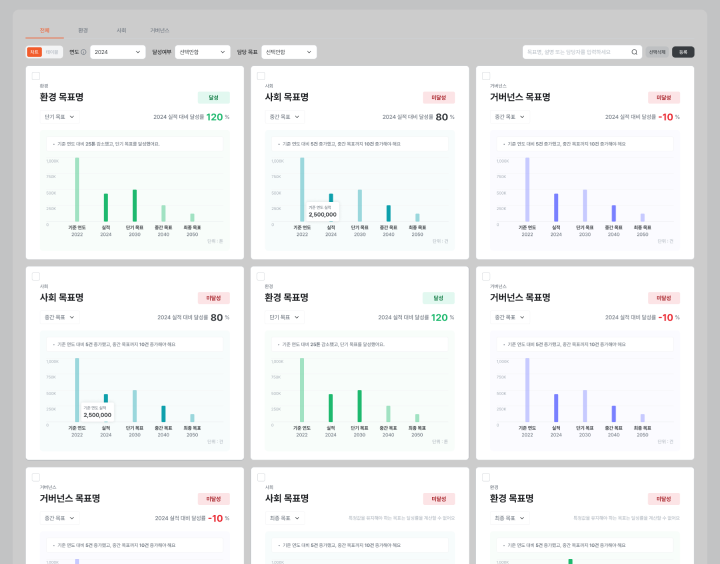
사용자 보고서를 기반으로 AI가 자동 리뷰를 수행하고, 항목별 결과를 시각화해 일관된 분석 체계를 제공하는 메뉴입니다.
사용자가 작성한 보고서를 기반으로 AI가 자동으로 리뷰를 수행
항목별 리뷰 결과를 시각적으로 정리해 사용자에게 제공
정해진 프롬프트 구조에 따라 일관된 분석 결과를 출력
사용자가 항목별 보고서를 편리하게 작성하고 AI 리뷰를 원클릭으로 실행할 수 있도록 UX 설계
사용자가 AI 리뷰 결과를 항목별로 명확하게 인지할 수 있도록, 시각적 우선순위와 정돈된 레이아웃을 중심으로 결과 출력 UI 설계
개발자가 목표 기능을 정확히 구현할 수 있도록 각 화면 및 기능 흐름에 대한 상세 디스크립션을 작성하고, 개발 커뮤니케이션의 기준점을 마련
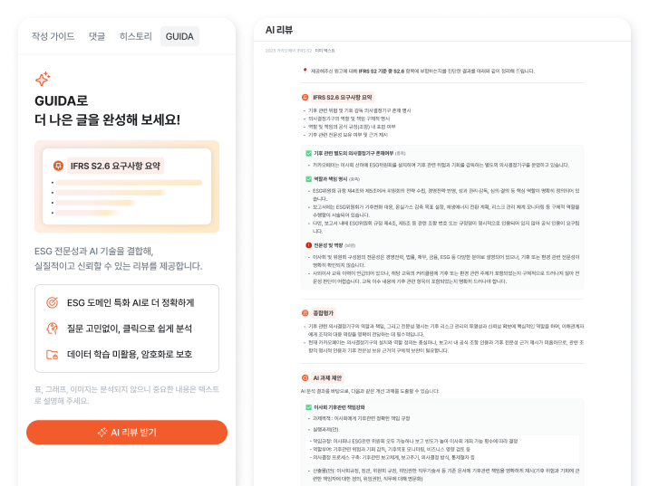
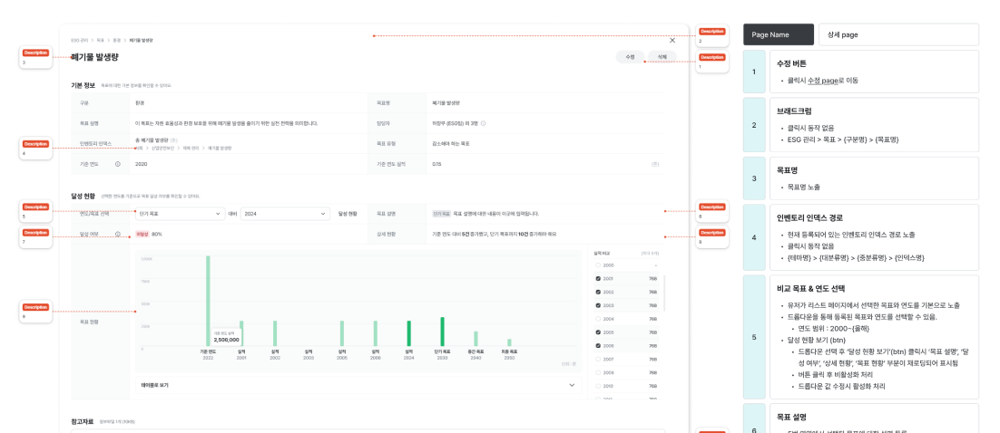
Figma 주석 기능을 활용해 화면 단위로 기능과 동작을 UI 요소에 설명을 연결하는 방식으로 설계 의도를 명확하게 전달할 수 있는 문서 구조 정립
주석 기반 설명을 통해 별도의 문서 없이도 화면만으로 기능과 흐름을 이해할 수 있도록 구성해, 해석 차이를 줄이고 협업 과정에서의 커뮤니케이션 비용 감소